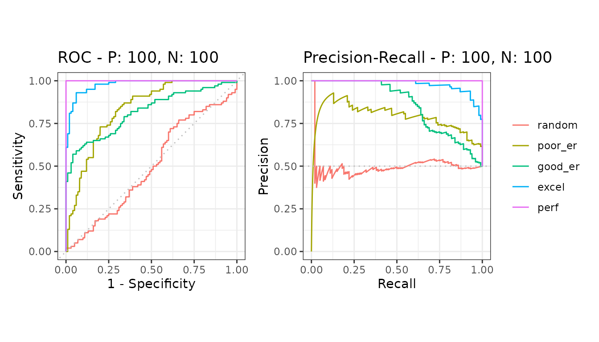

Compare several models
Source:vignettes/articles/howto-multiple-models.Rmd
howto-multiple-models.RmdSeveral models tested on the same data give one curve each, drawn together on one plot.
library(precrec)
library(ggplot2)
samps <- create_sim_samples(1, 100, 100, "all")
mdat <- mmdata(samps[["scores"]], samps[["labels"]],
modnames = samps[["modnames"]]
)The five models here are the five simulated quality levels, from random to perfect.
Calculate and plot
evalmod() notices there is more than one model and
labels the curves accordingly.

Compare the areas
| modnames | dsids | curvetypes | aucs |
|---|---|---|---|
| random | 1 | ROC | 0.4971000 |
| random | 1 | PRC | 0.4992116 |
| poor_er | 1 | ROC | 0.8328000 |
| poor_er | 1 | PRC | 0.7860641 |
| good_er | 1 | ROC | 0.8180000 |
| good_er | 1 | PRC | 0.8574152 |
| excel | 1 | ROC | 0.9780000 |
| excel | 1 | PRC | 0.9782574 |
| perf | 1 | ROC | 1.0000000 |
| perf | 1 | PRC | 1.0000000 |
The gap between the two curve types is the point of the package: ROC areas stay high for models the precision-recall areas show to be weak. See balanced and imbalanced data.